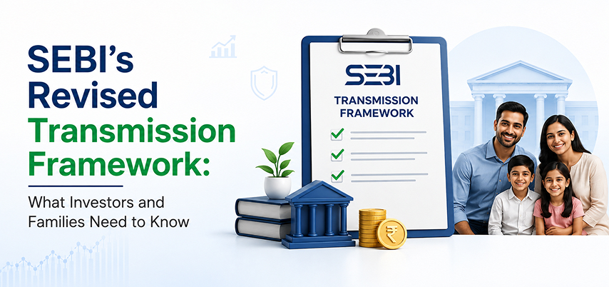

SEBI’s Revised Transmission Framework : What Investors and Families Need to Know

Investing for the future is important, but ensuring that your investments can be smoothly passed on to your loved ones is equally important. When an investor passes away, shares, mutual fund units and other securities have to be transmitted to the nominee or legal heir, as applicable.
Recognising the challenges families can face during this process, SEBI vide its Circular dated 23rd July 2026 on ‘Ease of Doing Investment and Ease of Doing Business – Simplification and standardisation of the framework for transmission of securities’, has introduced a revised and standardised framework aimed at simplifying documentation and making transmission more efficient, which will come into effect 30 days from the date of the circular.
The new guidelines focus on reducing documentation for eligible claims, introducing faster processing for smaller holdings, and bringing greater consistency across financial institutions. Let's take a closer look at what has changed and what these updates mean for investors and their families.
What is the Transmission of Securities?
Transmission of securities is the process of transferring investments from a deceased investor to their nominee or legal heir. Unlike a transfer, where an investor voluntarily transfers securities to someone else, a transmission takes place after the investor's death, allowing the securities to pass to the rightful claimant.
SEBI's revised framework covers listed securities and mutual fund units, with the aim of creating a uniform transmission process across listed companies, depositories, Depository Participants (DPs), Registrars and Transfer Agents (RTAs), and Asset Management Companies (AMCs). This is expected to make the process simpler, more consistent, and easier for investors and their families.
Why Did SEBI Introduce These Changes?
Over the past few years, there have been cases where families have faced challenges in claiming their investments due to a lot of documentation required.
SEBI's revised framework aims to:
- Make the transmission process simpler.
- Reduce documentation for eligible claims.
- Speed up the processing of requests.
- Standardise procedures across market participants.
- Make it easier for nominees and legal heirs to complete the process.
The changes are intended to reduce delays and make it easier for families and claimants to complete the transmission process.
Key Changes Introduced Under the New Framework
1. Quick Transmission Processing (QTP)
One of the most significant additions is the Quick Transmission Processing (QTP) route for small-value claims meeting the eligibility conditions specified under SEBI’s QTP framework.
Under this route:
- Physical holdings up to ₹10,000 are eligible.
- Demat holdings up to ₹30,000 are eligible. (Applicable only where claimant is parent, spouse, child or parent-in-law)
For eligible claims, the process is designed to be faster with fewer documentation requirements.
2. Higher Limits for Simplified Documentation
SEBI has also increased the value limits under which claimants can submit simplified documentation.
The revised limits are:
| Holding Type | Simplified Documentation Limit |
|---|---|
| Physical Holdings | Up to ₹10 lakh per listed company |
| Demat Holdings | Up to ₹30 lakh per beneficial owner |
This means many investors who previously required extensive documentation may now benefit from a simpler process.
3. Reduced Documentation Requirements
The revised framework simplifies the list of documents required for eligible transmission claims.
In addition, SEBI has introduced a combined affidavit-cum-No Objection Certificate (NOC), reducing the need for multiple declarations from legal heirs in applicable cases.
4. QR Code Death Certificates Can Be Accepted
To improve verification, QR code-enabled death certificates may now be accepted where applicable.
This supports quicker verification and reduces manual checks during the transmission process.
5. A Defined Processing Timeline
For eligible transmission claims where all required documents have been received, the processing entity is required to process the claim within 21 calendar days.
If additional documents are required or a claim cannot be processed, the concerned entity is expected to communicate the reason to the claimant.
What if There is No Nominee?
Many investors still do not register a nominee for their investments. In such situations, the securities can still be transmitted to the legal heir, but the documentation requirements depend on factors such as the value of the holdings and the applicable legal documents.
For very small eligible claims, the Quick Transmission Processing route may be available to specified close family members. For larger claims, additional legal documentation may be required depending on the circumstances.
What about Joint Holdings?
The revised framework also simplifies transmission for jointly held securities.
Where securities are held jointly and one joint holder dies, the transmission to the surviving holder(s) follows the rule of survivorship, subject to the applicable requirements. The surviving holder can continue the transmission process by submitting the required death certificate. Additional KYC or indemnity documents are generally not required solely because one of the joint holders has died.
This removes an unnecessary layer of documentation for surviving investors.
What about NRIs and Death Certificate issued Abroad?
Although SEBI has simplified the transmission process, maintaining an updated nomination remains one of the easiest ways to help your family.
An updated nomination can:
- Help reduce delays.
- Make the claim process more straightforward.
- Minimise uncertainty for family members.
- Ensure investments can be identified and claimed more efficiently.
Investors should also keep important documents safely organised and ensure family members know about their investments.
What Should Investors Do Now?
The revised framework is a positive step towards making transmission less stressful for families. However, investors can make the process even easier by taking a few simple actions today:
- Check whether all your investments have an updated nominee.
- Review your Demat account details regularly.
- Keep important documents safely stored.
- Inform your family about your investments.
- Update your nominee whenever there is a major life event such as marriage or changes within the family.
Conclusion
SEBI's revised transmission framework is focused on making an already difficult situation a little easier for families. Due to fast processing, less complicated paperwork, and standardized processes, it is expected that these changes will decrease delays and enhance the whole experience for nominees and legal beneficiaries.
Although the new rules make the whole process easier, advance planning continues to be equally critical. By ensuring that you have an updated nomination and keeping track of all your investments, you can help ease things for your loved ones in case they ever have to access your investments.
Disclaimer - This blog is intended solely for informational and educational purposes and should not be construed as financial, investment, legal or tax advice. The information is based on the applicable SEBI framework relating to transmission of securities and is subject to changes in applicable laws, regulations, circulars and procedures. Actual transmission requirements may vary depending on the circumstances of the claim and the requirements of the concerned Depository Participant, Registrar and Transfer Agent, Asset Management Company or other intermediary, as applicable. Readers are advised to verify the applicable requirements and seek professional advice, where necessary, before taking any action.
FAQs
1. What is transmission of securities?
Transmission of securities is the process of transferring shares, mutual fund units, and other securities from a deceased investor to their nominee or legal heir, as applicable.
2. What is Quick Transmission Processing (QTP)?
QTP is a simplified route introduced for eligible small-value transmission claims. Physical holdings up to ₹10,000 and demat holdings up to ₹30,000 may qualify, subject to the conditions specified under SEBI’s framework.
3. How has SEBI simplified the documentation for transmission?
SEBI has reduced documentation requirements for eligible claims and introduced a combined affidavit-cum-No Objection Certificate (NOC) in applicable cases. The framework also allows QR code-enabled death certificates where applicable.
4. What happens if the deceased investor did not have a nominee?
The securities can still be transmitted to the legal heir. The documents required will depend on factors such as the value of the holdings and the circumstances of the claim. Eligible small-value claims may qualify for the simplified QTP route.
5. How long does the transmission process take under the revised framework?
For eligible claims where all required documents have been submitted, the processing entity is required to process the transmission request within 21 calendar days. If additional documents are required, the claimant should be informed accordingly.